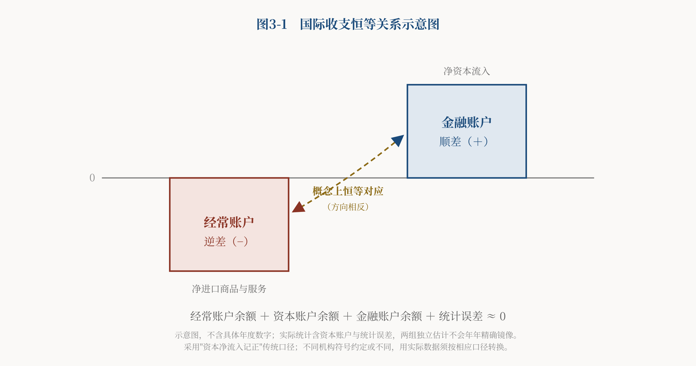

导言
当代世界，单个国家内部大多是有政府管控的市场经济，差别只在干预多少；而在国家之上的全球层面，却没有一个与国内政府相当的管控者。然而从全球看，人类至今没有建立一个具有完整主权和强制执行能力的世界政府。全球经济处于主权国家竞争、国际组织协调、条约约束与市场机制并存的碎片化治理状态——存在联合国、IMF、世界银行、WTO、国际清算银行、区域组织、国际条约与跨国监管合作，却缺少一个像国内政府那样、能对全域负责并强制执行的第三方。
上篇讨论了家庭与企业"两种生产"的微观辩证运动，中篇把政府公共产品生产纳入，展开"三种生产"的宏观总量分析。下篇进一步讨论曼昆《经济学原理》的第三项局限，以及国家权力、国际货币与国际公共产品之间的关系。
一、第三项缺陷究竟是什么
需要先申明：本文不是指责曼昆完全忽视国际经济与政府。恰恰相反，他的入门教材讨论过国际贸易、开放经济宏观、市场势力（垄断、寡头、垄断竞争），也讨论过政府的作用。本文的批评是更具体的一个：
曼昆分别讨论了市场势力、开放经济和政府作用，却没有把国家权力、国际货币发行权与国际公共产品，纳入同一个全球政治经济学框架；其分析单位仍主要是企业、家庭与单个国家经济，因而难以解释在没有超国家主权的条件下，全球制度为何会持续失衡。
这就是第三项缺陷的准确表述。它不是"曼昆不谈国际经济"，而是"曼昆缺一个能容纳国家权力与全球公共产品的统一框架"。缺了这个框架，一系列关键现象就无从解释：为什么在没有世界政府的条件下，一国的货币会成为全球货币？为什么大国的国内政策会成为别国的问题？为什么全球市场既能产生合作，也能产生持续的不平等与周期性的危机？
本文的补法，是把中篇建立的"大三权"框架，从国内推广到全球——看清楚国内市场有政府这个第三方、而全球市场没有，会带来什么结构性后果。下面先把国内框架压缩重述（上、中篇已详论），再转入全球。
二、从国内"大三权"到全球治理缺位
政府管控下的市场经济，并非政府可以随心所欲。恰恰相反，在健全的制度中，政府被"大三权"分立与制衡关进笼子里，须履行生产和供给公共产品的职能。所谓"大三权"，是家庭权利、企业权利、政府权力三者的分立与制衡，对应劳资关系、政企关系、官民关系三大社会关系。这一框架上、中篇已详细阐述，此处只重述与本篇直接相关的两点。
第一，政府不是天然中立者，而是有自身利益的第三方。 政府居于家庭与企业之间，确实有调节劳资、维持税源税基的动机——工资过低会压垮消费、利润被侵蚀会打击投资，两者都损及税基，从而损害政府自身目标。但有此动机不等于会自动纠偏、回到中立位置：
政府不是天然中立者，而是具有自身利益的第三方。税源约束为政府纠偏提供了动力，但纠偏能否真正发生，取决于家庭和企业的制衡能力、信息反馈、法治边界与政治问责。 政府同样可能被资本、官僚集团或民粹力量俘获，也可能通过强制、信息控制与资源租金来维持权力，而不回到均衡位置。
这与T-3《和合主义》和中篇确立的条件命题一致：三元结构并不自动优于二元，政府这个第三方能否发挥调节作用，取决于它是否受到有效制衡。失职的政府可能失去权力，也可能凭借其他手段维持权力，这正是需要制度制衡的原因。
第二，工资、利润、税收是三种分配变量，不是三种"价格"。 工资可视为劳动的报酬，利润可视为资本的回报，但税收是法定的强制征收，不是同一意义上的市场价格——三者不能共同求出一个严格的"均衡价格"：
家庭、企业、政府围绕工资、利润、税收的博弈，形成的是一种"大三权"动态均衡结构，或曰工资—利润—税收的动态配置关系。其中税收是一个制度性分配变量，而非公共产品的价格。
在这个动态配置关系中，三方的利益此消彼长，通过市场竞争与政治博弈达到动态平衡；一旦失衡（如工资增长长期落后于利润与税收），经济就会出问题。这一配置关系映射三方深层的权利与权力结构，划出各自的行为边界。
有了这两点，就可以转入本篇的真正主题：国内市场有政府这个受制衡的第三方，全球市场却没有。 这个差别，是理解美元体系、国际公共产品与全球失衡的钥匙。
三、国际公共产品的三种形成机制
人类文明至今没有建立有效的世界政府。联合国及各类国际组织在特定领域发挥作用，但都不具备世界政府的职能与权威。因此在全球层面，负外部性缺少一个像国内政府那样的第三方来矫正——一国污染了全球气候，没有一个"世界政府"能像国内政府对化工厂征收排污税那样，去矫正这种跨国负外部性。
在这种缺乏全域第三方的状态下，每个国家都像一个"有限责任公司"，主要为本国利益负责。追求本国利益本身是正常的——问题在于，当没有世界政府时，国际公共产品（国际安全、国际秩序、稳定的国际货币、开放的贸易体系）由谁提供、如何提供？本文认为，国际公共产品主要通过三种机制形成：
其一，国际组织与条约合作。 各国通过谈判缔约、建立国际组织，共同供给国际公共产品（如世界卫生体系、气候协定、贸易规则）。这类合作能产生正外部性，但受制于集体行动困难、缺乏强制执行力，往往供给不足。
其二，霸权国的有意供给。 某个占主导地位的大国，出于维护自身主导秩序的需要，主动供给国际公共产品（如提供国际货币、维持航道安全、充当最后贷款人）。它能较有力地供给公共产品，但供给的方向与条件由霸权国的利益决定，且天然带有排他与胁迫的可能。
其三，国家自利行为的正负外溢。 各国追求自身利益的行为，会不自觉地产生跨国的正外部性（如技术扩散、市场开放）或负外部性（如金融危机传导、环境损害）。这类"外溢型"公共产品不是有意供给的，而是自利行为的副产品，正负难料。
各国发展的严重不平等，全球无政府结构是重要原因之一，但不是唯一原因。 历史条件、地理禀赋、殖民遗产、国内制度质量、人力资本积累等，都在其中起作用。同样，全球市场的竞争可能产生集中与市场势力，但竞争并不必然产生垄断，垄断也不是所有不平等的必然来源。 本文认为，在缺乏全球第三方矫正的条件下，市场势力的形成与不平等的累积更容易发生，也更难被纠偏。
而在所有国际公共产品中，最典型、也最能体现上述三种机制交织的，是美元。
四、美元体系：公共服务、国家特权与全球风险
美元的国际地位，本文认为同时具有三重属性：它是一种国际公共服务（为全球贸易与金融提供计价、支付、结算、储备工具）；是一项国家特权（美国由此获得铸币收益、融资便利与金融影响力）；也是一条全球风险传导渠道（美国的国内政策通过美元外溢为别国的冲击）。这三重属性交织，构成了美元体系的全部张力。
美元地位的形成与表现。 二战后，凭借强大的经济与黄金储备，美国主导建立了布雷顿森林体系，确立美元的中心地位。1971年美元与黄金脱钩后，美元转为信用货币，但其国际地位通过多种机制延续下来。截至近年，美元在全球官方外汇储备中占比约58%，在国际贸易计价、外汇交易、国际支付中都占据主导地位。[1]
关于"石油美元"，需要避免神话式叙述。石油美元体系的形成是一个复杂的历史过程：二十世纪七十年代美国与沙特等产油国的一系列安排，连同美元既有的国际地位、市场惯性与美元本身的网络效应，共同强化了石油贸易与美元的绑定。这是多种因素长期演化的结果，而非一纸秘密协议规定了"石油必须用美元结算"。
美元体系的核心矛盾：特里芬难题及其演化。 特里芬最初揭示的，是布雷顿森林体系下全球美元流动性需求与美元黄金可兑换信用之间的矛盾：全球越需要美元，美国越要输出美元，而输出越多、美元兑换黄金的信用就越受质疑。[2]进入信用美元时代后，黄金约束消失，但这一难题演化为另一种张力：全球需要充足而稳定的美元流动性，而美元的供给及其价格主要服从美国国内政策目标；美国经常账户逆差、跨境银行信用与离岸美元市场等，共同承担了美元向全球输出的功能——不必、也并非全部依赖美国的经常账户逆差。
这一张力的深层，是一个权力与问责的不对称。需要准确表述它，而不是诉诸一个并不存在的法理原则。并没有哪一条国际法规定"只有世界政府才有资格发行全球货币"；美元取得全球功能，主要是各国政府、企业与金融机构的选择、制度安排与长期形成的网络效应共同造就的。真正的结构性矛盾在于：
美元的全球功能并非来自一项全球授权，而是由美国国内主权、市场选择与长期网络效应共同造就。由此产生的结构性矛盾是：货币权力立足于美国国内授权，政策后果却外溢全球，而受影响的国家并不拥有与影响程度相称的决策权和问责权。
这比"美国越权行使世界货币发行权"的说法更准确，也更有理论力量——它把批判从一个可疑的法理主张，落到一个真实的治理缺陷上：这正是"无世界政府"这一结构缺位的集中体现。
必须严格区分四个层次。 依据中篇已经厘清的货币框架，美元、美债、银行信用、央行货币是四个不同的概念，不能混为一谈：
- 美元：提供计价、支付与结算的国际货币；
- 美国国债：提供美元计价的安全资产、储备资产与金融抵押品；
- 银行信用创造：商业银行（含离岸欧洲美元市场）通过信贷创造的美元存款；
- 央行货币创造：美联储可通过公开市场资产购买、贴现窗口贷款、回购及其他流动性工具改变基础货币；在二级市场购买国债是其中一种方式。
美债不等于美元。 世界对美元的需求，并非简单地由美国财政部增发国债来补足；国际美元流动性来自多种渠道：美国银行与非银行金融机构的跨境资产负债、离岸欧洲美元市场、商业银行的美元信用创造、跨境证券投资、美联储的互换额度与回购安排，以及美国经常账户逆差产生的美元支付。因此：
美元提供计价、支付和结算工具；美国国债主要提供美元计价的安全资产、储备资产和金融抵押品。两者相互支撑，但不能混为同一种货币供给。
美联储的性质需要准确把握。 美联储确有公私混合的组织结构——会员银行持有地区储备银行的法定股份——但联邦储备委员会是联邦政府机构，美联储系统并不归会员银行所有，货币政策也不由私人股东决定。[3]因此：
美联储具有公私混合的组织结构，但其法定目标与货币政策权力来自国会。它首先依据美国国内授权行事，其政策却会通过美元体系产生全球外溢效应。
这里真正有力的批判在于：一个受国会授权、首先对美国国内负责的机构，其货币政策却外溢全球、成为别国的冲击源——问题不在于"谁拥有美联储"，而在于一国央行的国内决策承担着准全球央行的后果，却不对全球负责。
美联储与财政部的关系也须分清。 美联储不能直接从财政部购买新发行的国债，只能在二级市场实施公开市场操作；其购债决定与财政部的发债决定，在法律和制度上相互独立。[4]具体而言：
财政部通过一级市场发行国债；美联储基于货币政策目标在二级市场买卖国债，从而影响准备金、流动性与利率环境。
美元潮汐包含三个不同层次。 美联储的货币政策主要基于美国国内经济（就业与通胀）制定，其加息、减息会引起全球资本流动、汇率与资产价格的剧烈波动——新兴市场在美元宽松时吸引资本流入、积累美元债务，在美元收紧时遭遇资本外流、本币贬值、债务负担加重，1997年亚洲金融危机、2013年"缩减恐慌"都与此相关。这一现象可称为"美元潮汐"。围绕它有一种强判断——美国"主动制造潮汐、收割世界"。评价这一判断，必须区分三个层次：
- 可核验事实：美联储政策影响全球利率、汇率与资本流动，这有大量证据支持；
- 机制判断：美元体系使美国的政策成本部分外溢给其他国家，美国也从美元地位中获益，这是对结构的合理推断；
- 作者推论：美国可能利用这种结构性优势维护自身国家利益——这是本文提出的批判性判断，属于动机推断，尚未得到直接证据的充分验证。
本文认为，从"政策造成资本流动"进一步推断"美国有意制造潮汐、收割垄断利润"，属于动机判断，而不是已经得到直接证实的事实。 此外，美元升值时，其他国家货币相对贬值，通常可能降低其商品的美元价格，而非抬高；出口竞争力的实际变化取决于计价黏性、进口投入、美元债务与企业定价能力，不能一概而论。
五、美国国际收支、财政债务与国内分配
美元体系的三重属性，最终落在美国的国际收支与财政债务上，并由此连回美国国内的分配矛盾。这一节由此提出本文的核心命题——"美国社会矛盾的证券化"。
国际收支的恒等关系。 美国经常账户长期逆差，与之相对的是金融账户的净流入。经常账户记录商品和服务贸易、跨境收入及经常转移；经常账户逆差在国际收支意义上对应对外净借款。

图3-1以概念示意的方式呈现这一恒等对应，不标注具体年度数字：现实统计中经常账户与金融账户因资本账户和统计误差的存在不会年年精确镜像，实际数据须查阅BEA国际交易账户的原始序列。[9]
由此有一点判断值得强调：对拥有美元地位的美国而言，贸易逆差未必纯是"吃亏"。 资本流入为美国的经常账户逆差提供了融资，并可能降低其融资成本、支撑资产市场与美元地位。因此，贸易逆差不能简单理解为美国单方面受损；但它的行业、地区与阶层分配后果并不均衡——有人受益（消费者、金融与科技部门），有人受损（部分制造业地区与工人），这种不均衡正是后文分配矛盾的伏笔。同时，逆差也在积累债务与再融资压力，不能说逆差"纯是好事"。
贸易逆差由什么决定？ 贸易的主体主要是家庭和企业，不是政府；把美国的贸易逆差说成"政府发债从国外购买商品造成的"，并不准确。在会计上，经常账户余额对应国民储蓄与国内投资之差；在经济机制上，私人储蓄和投资、财政收支、汇率、国内需求及跨境资本流动共同影响这一结果。 美国的低储蓄、高消费、财政赤字与作为资本流入目的地的地位，共同造成了持续的经常账户逆差，这不是"政府发债买商品"一条链条所能概括的。
债务压力与缓冲：美国会陷入"债务死亡螺旋"吗？ 截至2024年末，美国联邦政府债务总额（gross federal debt）超过36万亿美元，与GDP之比约120%（总额口径）；更适合财政可持续性分析的"公众持有债务"（debt held by the public）与GDP之比约100%。2024财年联邦净利息支出约8,800亿美元，历史上首次超过国防开支。[5]大量低利率时期发行的旧债需以更高利率再融资，利息负担将进一步加重；主权评级下调与债务上限之争也在加剧不确定性。[6]与此同时，去美元化在缓慢推进，美元在全球储备中的份额已从本世纪初的约72%降至58%左右。[7]
但也有强大的缓冲：美元的世界货币地位赋予美国独特优势——美债市场是全球规模最大、流动性最好的债券市场，全球对安全资产的需求仍在支撑美债；美国在AI等前沿科技的创新优势可能通过生产率回升增强偿债能力；企业税与富人税负在技术上都有上调空间，财政整顿在技术上并非无路可走，难的是政治共识。综合看，本文的判断是：美国短期内凭借美元特权与市场深度，大概率可以避免债务死亡螺旋；但长期风险取决于三个变量——两党能否打破僵局推动财政改革、AI等技术能否再造生产率奇迹、去美元化是否侵蚀美元护城河到临界点。 对包括中国在内的美债主要持有国，须以底线思维对待这一潜在风险。
制造业就业：一个多因过程，而非单一元凶。 把美国制造业工人失业简单归因于某一种资本形态"砸了饭碗"，会过度单因化。美国制造业就业的变化，至少同时受到自动化与生产率提高、中国等进口竞争、全球产业转移、工会衰退、企业治理的股东价值导向、区域教育与产业结构差异、汇率税制与宏观政策等多种因素的影响：
本文认为，自动化、全球化与金融化共同重构了美国制造业就业；"硅谷—华尔街高科技金融资本"是这一过程中重要的受益者和推动力量之一，而非唯一原因。
"硅谷—华尔街高科技金融资本"作为本文提出的一个概念，用以刻画高科技产业资本与金融资本结合、财富高度集中的现象，是有解释价值的；但它是作者提出的分析概念，不是排除了其他解释之后被证明的唯一原因。全球化确实造就了一种分化图景，不妨借一个比喻：东西海岸的科技与金融是"微笑的两端"，中西部铁锈地带是"苦哈哈的中间"。美国的政治地理远比"东西海岸对中西部"复杂：铁锈带本身是摇摆区域，高科技与金融资本的政治选择也并不一致。因此，分配分化与美国政治版图之间存在关联，但不能据此断言单一资本形态直接重塑了红蓝版图。
理论落点：美国社会矛盾的证券化。 现在可以提出本文的核心命题了。但须先避免一种过度简化——把它讲成"富人借钱给政府、政府拿去救济穷人"的现金流故事。这个简化经不起推敲：美债的债权人并非只有富人。
美债的债权人结构，规范的分类是"政府内部持有"（government holdings，如社保信托基金）与"公众持有"（held by the public）两大类；公众持有中再区分美联储持有、国内私人持有与外国持有者——须注意美联储本身属于"公众持有"下的国内持有者，不宜与国内、国外并列为第三类。国内公众持有者不仅包括富裕个人，还包括养老金、共同基金、保险机构、银行与广大储户；此外还有大量外国政府与机构，以及美联储自身。[8]因此，"美债债权人主要是富人"的说法并不准确。同样，国债收入进入联邦统一预算，不能把"某一笔国债"与"某一项福利支出"一一对应——"政府借富人的钱、专门用于社保"只是一个抽象的简化机制，不是美债现金流的实际逐笔路径。
厘清这些之后，"证券化"命题的准确含义就清楚了。它不是一个现金流故事，而是一个结构机制：
联邦政府通过举债与转移支付，在一个贫富高度分化的社会里维持社会保障与福利承诺，缓解分配矛盾、维持稳定。这里的机制需要精确表述——福利承诺并非逐项转化为国债，而是：当福利承诺、公共支出与税收能力之间形成持续的缺口时，财政赤字通过国债融资，分配冲突的一部分便被转化为可交易、可滚动、可跨代延续的国家债务。 据此，可以给出本文命题的准确定义：
本文所谓"美国社会矛盾的证券化"，是指贫富分化、福利承诺、税收政治与代际分配所形成的财政冲突，部分地通过国债融资，被转化、递延并记录在国家资产负债表上。 于是，美国社会的分配矛盾，不再只以街头冲突的形式即时爆发，而是部分地被封装、递延进国债这一可滚动、可跨代转移的金融工具之中。
这是一个有待验证的理论命题，不是已被预算数据证明的结论。它提供的是理解美国财政困境的一个结构性视角：美债问题的深层，不只是金融货币问题，也是美国社会分配矛盾的一种制度性表达。其经验检验需要附加条件：在控制经济周期、人口老龄化、税制变化与医疗成本之后，如果分配不平等的程度仍与转移支付需求、结构性赤字或债务扩张显著相关，才能为这一命题提供经验支持。 一个相关的观察是：当债权人（无论富人还是机构）对这张资产负债表的可持续性失去信心时，压力会通过美债市场传导——2025年前后美债收益率的剧烈波动或是一次显现；但要判定"资金持续逃离美元体系"，仍需持续的持仓与资本流量证据，短期的股债汇波动尚不足以证明。
竞争性解释。 本文的"证券化"命题并非对美国财政困境的唯一解释，须列出与之竞争的其他视角：其一，标准的财政可持续性分析（债务/GDP、利率—增长率差 r−g、基础赤字）从纯财政角度就能解释债务动态，不必诉诸"社会矛盾"；其二，政治经济学的否决点理论认为美国的债务扩张源于两党制下的支出刚性与增税困难；其三，人口结构解释强调老龄化推高社保医疗支出是债务上升的主因。这些解释各有其力，本文并不否定。本文的命题主张自己多提供了一个视角：把财政债务与国内分配结构联系起来，解释为什么福利承诺会不断累积、为什么削减如此困难——因为它们已被"证券化"进一张牵动全社会的资产负债表。这一视角是否成立，交由读者与同行检验。
六、多极化条件下的制度问题与和合主义回应
把前面几节连起来，第三项缺陷的后果就完整显现了：国内市场有政府这个（受制衡的）第三方，可以矫正外部性、调节分配、提供公共产品；而全球市场没有世界政府，国际公共产品只能通过合作、霸权供给或自利外溢三种不完善的机制形成，其中美元体系集中体现了"一国货币充当世界货币"的全部张力——它既提供公共服务，又是国家特权，还是风险传导渠道。曼昆的框架分析不了这一层，因为它的分析单位止于企业、家庭与单个国家，缺一个把国家权力与全球公共产品统一起来的政治经济学框架。
那么出路在哪里？本文认为，问题的根源是全球治理的结构缺位，而非某一个国家的道德缺陷。因此，简单地谴责美国"霸权"或指望某个大国"利他"，都不解决问题——在无世界政府的条件下，指望霸权国单方面让渡利益既不现实，重复"你死我活"的零和竞争又会把世界拖入危险。
真正的方向，是在承认多极化、承认各国自利的前提下，探索一种能让国际公共产品更多由"合作"而非"霸权供给"或"负外溢"来形成的路径。这需要一种能够超越自由主义与社会主义之争、促成各国合作而非零和对抗的思想资源。本文认为，植根于中国哲学的和合主义，是这样一个候选答案：它主张差异共生、以合作为常态、在多元主体间寻求动态平衡——把国内"大三权"相互制衡、合作共生的逻辑，尝试性地投射到全球治理层面。
需要强调，这只是一个方向性的提议，不是一套现成方案。和合主义能否、以及如何回应全球治理缺位，它是什么、从何而来、何以能整合自由主义与社会主义而超越丛林法则，本文不在此展开——详见本站《和合主义：合三为一政治经济学的哲学基础》（T-3）。此处只标明：下篇诊断的"全球第三方缺位"，正是T-3所提出的和合主义要回应的问题。
对中国的启示则是具体的：中美经贸本可以是比较优势下的互利互惠。本文认为，美国国内的分配矛盾及制造业地区的政治压力，是这场贸易战的重要驱动力之一；与此同时，技术竞争、地缘政治与供应链安全，也共同塑造了这一政策——贸易战不是单一因素的产物。但无论其成因如何，它都给中国以警示：过度依赖外需的外向型模式，对中国这样体量的经济体不可持续。正如中篇反复论证的，"生产力超前、生命力滞后"不可持续，"重生产、轻生活"必须改变。长期看，中国需要降低对外需和贸易顺差的过度依赖，增强居民消费与国内需求对增长的支撑能力——这里的目标不是让经常账户机械归零（它本不需要每年平衡），而是让增长更多立足于国内的生命力。这与本站一以贯之的价值判断相通：生命力高于生产力。
结语
本文上、中、下三篇，以曼昆《经济学原理》为样本，从"两种生产"的微观辩证运动，到"三种生产"的宏观总量分析，再到没有世界政府的全球市场经济，逐层指出主流经济学教科书的三项局限，并尝试给出弥补的分析框架。三项局限层层递进：微观上把家庭化约为要素所有者，宏观上不能仅凭会计规则解释三种生产的结构性失衡，全球上缺一个容纳国家权力与国际公共产品的统一框架。
在可预见的未来，人类还建立不起一个具有完整主权的世界政府，碎片化全球治理下的种种张力仍将长期存在。随着多极化世界秩序的酝酿成形，世界不仅需要新的力量均衡，更需要一种能够超越自由主义与社会主义之争、促成各国合作的思想资源——本文认为，植根于中国哲学智慧的和合主义，是这样一个值得探讨的候选答案。它是什么、从何而来、何以可能，详见《和合主义：合三为一政治经济学的哲学基础》。
注释
- 美元在全球官方外汇储备中的占比（约58%）：International Monetary Fund, Currency Composition of Official Foreign Exchange Reserves (COFER), IMF Data，2024年季度数据（data.imf.org/cofer）。国际贸易计价与外汇交易占比：Bank for International Settlements, Triennial Central Bank Survey of Foreign Exchange and OTC Derivatives Markets, 2022（bis.org）。国际支付占比：SWIFT, RMB Tracker / SWIFT Watch 月度报告（swift.com）。
- 特里芬难题：Robert Triffin, Gold and the Dollar Crisis: The Future of Convertibility, Yale University Press, 1960。特里芬原初论述针对布雷顿森林体系下的黄金可兑换性；本文对信用美元时代的引申已在正文说明。
- 美联储的组织结构与所有权：Board of Governors of the Federal Reserve System, "Who owns the Federal Reserve?"。会员银行持有地区储备银行法定股份，但联邦储备委员会为联邦政府机构，货币政策不由私人股东决定。
- 美联储购债与联邦政府发债决定的关系：Board of Governors of the Federal Reserve System, "How does the Federal Reserve's buying and selling of securities relate to the borrowing decisions of the federal government?"。美联储不直接认购财政部新发国债，仅在二级市场实施公开市场操作。
- 联邦债务总额、债务/GDP与净利息支出：U.S. Department of the Treasury, Fiscal Data（fiscaldata.treasury.gov）；U.S. Congressional Budget Office, The Budget and Economic Outlook, 2024/2025（cbo.gov）。"债务总额"为gross federal debt口径（约36万亿美元、约120% GDP）；"公众持有债务"（debt held by the public）约100% GDP，后者更适用于财政可持续性分析。2024财年净利息支出约8,800亿美元首次超过国防开支，见Treasury与CBO相关报表。
- 主权评级下调：Standard & Poor's于2011年8月将美国长期主权信用评级由AAA下调至AA+，Fitch于2023年8月将美国长期外币发行人违约评级由AAA下调至AA+，Moody’s Ratings于2025年5月16日将美国政府长期发行人评级及高级无担保债务评级由Aaa下调至Aa1，并将展望由负面调整为稳定；以上均据各评级机构正式公告。债务上限之争见相关年度国会与财政部公开记录。
- 美元在全球储备份额从约72%（2000年前后）降至约58%（近年）：IMF COFER数据库（data.imf.org/cofer）。
- 美债债权人结构与债务分类：U.S. Department of the Treasury, "Debt to the Penny" 及 Fiscal Data 相关数据集。规范分类为"政府内部持有"与"公众持有"；公众持有再区分美联储、国内私人与外国持有者（美联储属公众持有下的国内持有者，不与国内、国外平行并列）。
- 国际收支的恒等关系与统计口径：U.S. Bureau of Economic Analysis (BEA), U.S. International Transactions Accounts 及其可靠性说明（apps.bea.gov/scb，"The Reliability of the U.S. International Accounts"）。经常与资本账户净借贷同金融账户净借贷理论相等、实际存在统计差异；金融账户符号约定因机构而异。
资料说明
本文数据取自IMF（COFER）、BIS（Triennial Survey）、SWIFT、美联储、美国财政部（Fiscal Data）、CBO、BEA等机构公开发布的数据集与报告，具体见各条注释。涉及国际收支、美债债权人结构、货币与国债关系的表述，以上述机构口径及本系列中篇确立的货币—财政框架为准。图3-1为不含年度数字的原创概念示意图。AI工具用于资料整理与文字草拟；关键事实与数据以所列官方来源为准。